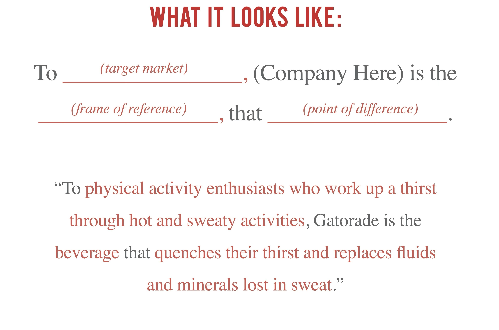
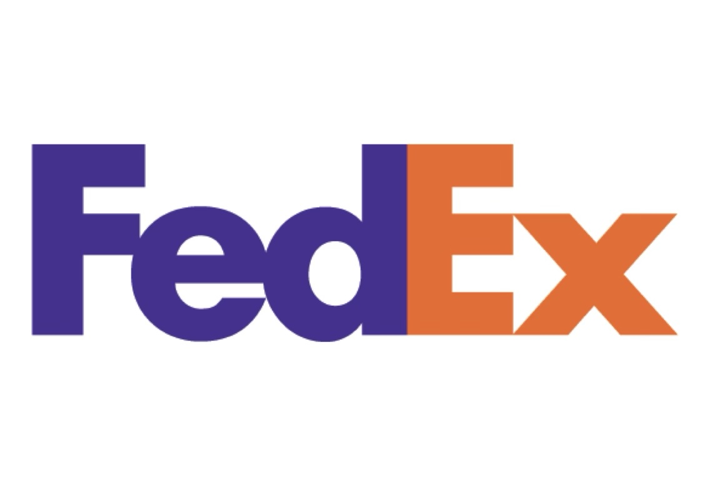
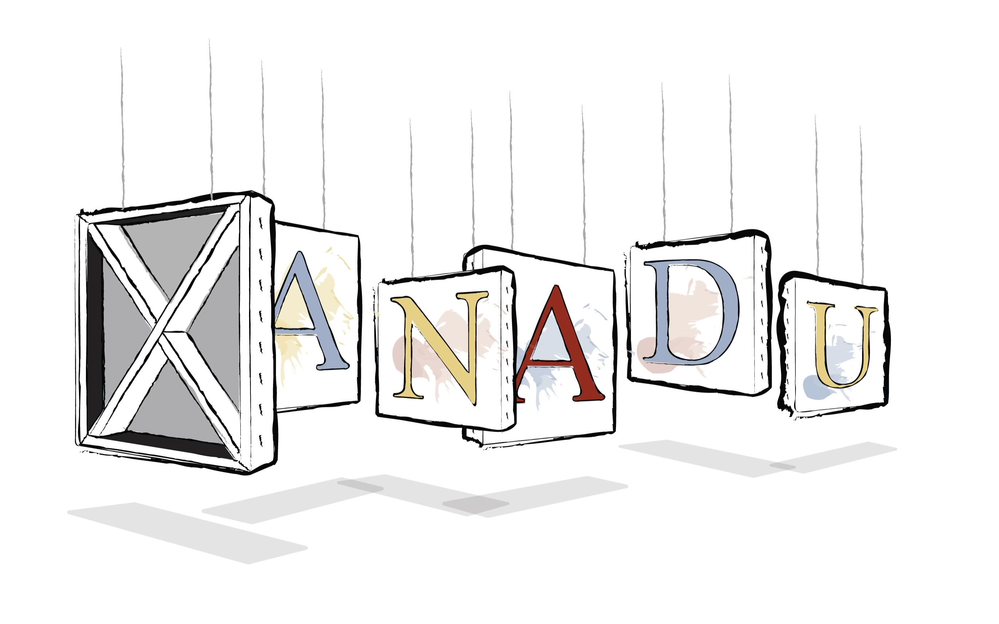
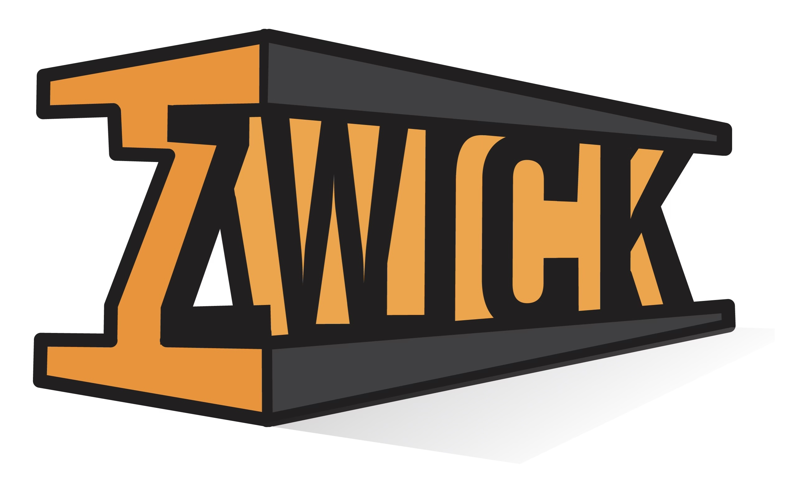

In this module, we’re going to learn about the proper process of brand development, and logo design. As you’ll see in the video, there are five (5) basic elements that I use to determine the best possible outcome for developing a brand from the ground up. In the video below, we’ll walk through each. Below that you’ll be able to scroll through these elements at your own pace, and read more about them.
01
Understanding Brand Position & Strategy…
What is a Brand Position / What is a Brand Position Statement (BPS)?
The foundation of any successful brand is its position. Where does your client fall in the market? What makes them unique? Identifying these key elements, and establishing a brand position will help you differentiate your client, and send you on your way to creating a unique symbol that will represent your clients’ unique voice in a cluttered visual landscape. It will also help your audience easily identify your client in the same landscape. Hence the word “identity”.
1. TARGET MARKET - This consists of the best potential customers or users.
2. FRAME OF REFERENCE - This is the specific market in which the company or product competes.
3. POINT OF DIFFERENCE – This is what defines the product or service. What makes it unique in the Target Market’s mind?
02
Understanding "Conceptual Design" : What is "Conceptual Design"?
Your final mark should utilize some type of visual concept. This is the hard part! Employ your creative mind and resourcefulness to come up with a “Big Idea” that encapsulates the essence of what your client’s company does, the most important aspects of your client’s business, perhaps your client’s corporate ethos, or even what they produce; – into a simple, elegant, visual symbol that is the distillation of all or some of the aforementioned elements. If done with the proper amount of care, it’s will be a challenging task. But if done properly, your freshly designed mark will be a shining beacon to your client’s current and future audience for the lifetime of their brand.
Think about how Paul Rand used a stylized word mark and typographic design to represent the line screen on a digital monitor in the IBM logo as a visual representation of what the company produces. This is a great example of a conceptual visual design.
Even something as simple as the FedEx logo with its wonderful and fun element of discovery represents conceptual design thinking. The negative-space arrow nestled in-between the capital “E” and lowercase “x” represents the always-in-forward-motion mindset of the fast and efficient corporate delivery service.
03
Understanding how originality plays a role in strategic visual design. What is originality?
They say that, “it’s all been done…”, and frankly, they may have a point. There’s a lot of really great, clever creative work out there. It’s almost a danger to go poking around for some inspiration, because you’re bound to find an idea you’ve been thinking about already existing in the world, or a better one. Google is often an instrument of discouragement. The other danger is being influenced by the work of others before you start a creation of your own. The point here is that whole purpose behind creating a “brand” or “identity” for your client is to bring something into the world that is new and original. Things that are new and original inherently have their own identity, and this helps garner attention. So, keep it fresh.
 04
The importance or simplicity in strategic visual design is often overlooked. What role does simplicity play in effective brand design?
Simplicity is often the key to the best designs in a variety of disciplines. Designers often distill their work down from much more complicated original ideas or sketches. The best door handle in the world is not overly complex. It’s pleasing to the eye, intuitive, user-friendly, and opens doors. No explanation necessary. In short, – it just works. So should your logo design. Eliminate any extraneous elements. It should communicate clearly without being overly-fussy, or employing trendy techniques. This will also help your mark be easily read in a variety of situations and media. As an added bonus, it will also make your mark easily scalable.
05
Utilizing already existing aspects of a brand’s story – like…it’s history!
Sometimes the benefit of working with and older, storied brand is, well…the stories! Leveraging an already established history in a rebrand or branding project can build on preexisting brand equity and sentiment. There’s nothing wrong with this. In fact, oftentimes you’d be a fool not to capitalize on a company’s established history. Take, for example, a company like Ford Motor Company. Now, if I were to do a rebrand for this company, there’d be a lot of history that I could draw my ideas from. Ford has a storied history in racing, manufacturing, innovation, design, etc, etc, etc, – the list goes on and on. I could find a wealth of symbols to play around with based on the company’s pre-existing history.